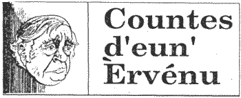

Eunne belle séthée la s'maine passée j'tais assis dans mon gardîn à êcaler des fèves quand l' Ph'lip Desclios arrivit siez nous, et j'm'apèrchu tout d'suite qué tchique chose l'avait mînt en mauvaise humeur.
'As tu veu dans la gâzette,'i's'fit, 'qu'i s'en vount empêchi les gens pour toute eunne journée d'aller à la grève au Bouâlé? Et ch'est pour pérmett' à eun tas d'peûles d'aver des courses éd moto ava et amount les carrièthes, à faithe eun potîn d'enfé et à empouaîsounner l'air avec la saleté d'lus engîns. J'en ai pâlé au Counnétablye mais i'parait qué n'y'a pas grand'chose qu'i peut y faithe, car ch'n'est pas la Pâraisse qu'a l'dèrnyi mot là-d'sus, ch'est l's'Etates'.
'Mais poutchi, crai-tu,' j'lis d'mandi, 'qué l's'Etats péremettent d'ité? I'n'mé semblye pas qu'il' aient grand érgard pour les Jèrriais, car, à chein qu'j'ai entendu eun tas des siens qui participent à ches courses ch'est d's' ètrangièrs qui veinnent ichein d'en Angliéterre et d'dgiâbl'ye sait d'iou.'
'En êffet,' s'fit l'Ph'lip, 'vé-tu, i' disent qué ches courses sount érconnues partout l'mounde et qué v'là tchi fait du bein à la r'noummée d'Jèrri et attire les touristes.'
'Mais, mon Ph'lip,' j'lis dis, 'ch'est là l'extchûse qu'i dounnent étout pour chutte salop'rie d'Bergerac. V'là tchi s'n'allait haûchi la r'noummée d'Jèrri et attirer les touristes, mais lé vrai en est qué Bergerac a traîné l'noum d'Jèrri dans la baue. La dreinne fais qué j'tais à Loundres j'rencountri des gens d'Singapore qué j'avais counnu quand j'tais là-bas, et i'n'en r'vénaient pas quand j'lus dis qué j'd'meurais en Jèrri. 'Mais,' i'm'dîtent avec horreu, 'poutchi aller d'meurer là? J'avouns veu Bergerac, et j'savouns bein qu'Jèrri ch'est eunne pliaiche dêgouâtante, infestée d'fripouns, d'voleurs, dé voyous, dé meurtriyièrs et d'racaille dé toutes les mèthes, ch'n'est pas là qu'les gens respectablyes dévent rester!'
'Lé v'là, mon Ph'lip, la r'noummée qu'Bergerac a dounné à Jèrri. Et n'en est-i poun d'même dé ches courses éd moto au Bouâlé? V'là t'ch'attire p'têt' des touristes, mais d'tchi sorte? Crai tu qu'des gens coumme i'faut s'en vount être attirés par d'ité potîn?'
'T'as raisoun,' Ph'lip mé rêpounnit, 'mais ch'n'est pas là l'tout. Les carrièthes du Bouâlé sount freumées pusieurs fais par an, et les Trin'tais et touas les gens paisiblyes éd Jèrri sount intèrdits dé s'en servi, coumme nos anchêtres ount tréjous ieu l'drouait d'faithe. Et pis, les gens d'par ichein s'en vount aver à souffri, toute la journée, lé tracas et l'sabbat d'ches maudites macheinnes. Mais chein qu'jé m'd'mande surtout, ch'est coumment qué l's'Etats peuvent dithe qu'i' sount en faveur dé protégi I's' envirouns et d'diminuer la pollutioun quand i' pérmettent, et même encoûragent ches courses-là avec touas les dégâts qu'i' fount aux alentours et à la paix du vaîsinné?'
'Tu peux bein té l'd'mander,' j'lis répounni, 'mais tu sai aussi bein qu'mé qu'ichein en Jèrri au jour d'agniet si y'a moyen d'faithe des sou, què ch's'sait avec Bergerac ou avec des courses éd moto, la tchestioun d'sauvegarder et d'protégi l's'envirouns et l'beinêtre des Jèrriais né coumpte pas pour chi. Véttan, prends eunne tchaise et dounne mé eun coup d'main à êcaler ches fèves. Au mains, à êcaler des fèves nou'n'fait d'ma à persounne, et j't'en doun'nai eun fricot pour emporter à ta bouonn'femme.'
Viyiz étout: